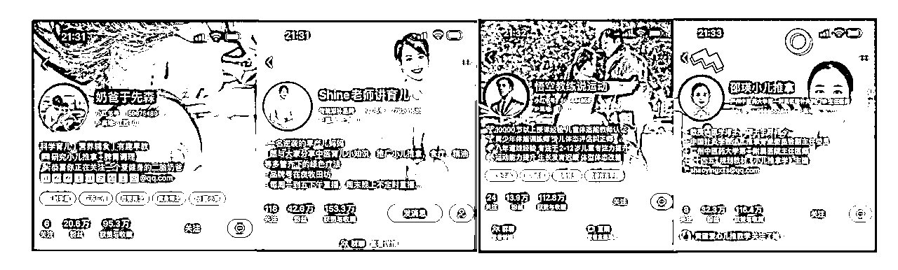

来源：https://ovjdv8vh9g8.feishu.cn/docx/B8bdd4mIKo7mA5xDiEicyhVAnMd
嗨，大家好。我是better。在小红书做过母婴，宠物，旅游，护肤等账号。
上次给大家分享了小红书出境游赛道，有兴趣的欢迎看看呀。
小红书出境游赛道 3周从0到1销售额12万的保姆级经验
https://ovjdv8vh9g8.feishu.cn/docx/ULbAdXJWVosx2rxeiZ4c9MjNncd
这次给大家分享下，小儿推拿赛道爆文产出的经验，这里我对爆文的定义是，互动数据超过1K的笔记哈。
希望对大家有用呀~~
下面，我将从以下三个方面来分享小红书小儿推拿赛道，怎么创作爆文笔记？
没有结婚生娃的圈友，可能都不知道小儿推拿。咱先来说说：小儿推拿是中医的一种，属于大健康领域。主要是通过专业手法不需要打针吃药来帮助宝宝预防和治愈一些常见的疾病。比如咳嗽，感冒，发烧，厌奶，不消化，肠胀气等等。
那小儿推拿到底有没有用呢？我家娃从9个月开始推拿，推到现在快3岁了。个人觉得是有用的哈，具体还是要见仁见智。
小儿推拿属于中医领域，医疗方面在不同平台遇到的限制问题，小儿推拿都会遇到。
非常明显的是：认证资质，内容易违规，账号被限流。
面对这些情况，怎么创作爆文？哈哈哈哈，且往下看。怎么感觉自己像个说书的？
1个月创作23篇笔记，17篇互动数据＞1000
抱歉抱歉，不太方便暴露合作商家账号，麻烦谅解。
小红书爆文方法论，估计圈友们都听腻了吧，better还是要继续分享几个对我非常有用的认知哈。
小技巧：图文爆款没流量了，咱可以改成视频形式。 视频形式的爆款没有流量了，改成图文形式，反正就是物尽其用。
另外同一段时间，同样的豹纹内容过多也会没有流量，过2个月再更，内容还是会爆！！
小技巧：低粉豹纹大多笔记排版简单，制作粗糙。咱有成熟的视频剪辑制作能力，或者精美图片制作能力，可以让用户有更好的感知，甚至大爆。
重复爆款参考
第一部分的时候，跟大家分享过小儿推拿在小红书进行内容创作遇到的难点
需要三甲医院的主治医生才能进行资质认证。不认证，即使你发了1篇爆文，也会容易收到违规提醒，说需要提供资质认证才能进行相关内容发布。小儿推拿店，正常情况下很难提供这个认证。目前的方法是怼矩阵，不断变化，并记录变化。
（1）收到违规提醒，直接删文吧，管它是不是豹纹，保号保账号权重要紧。删之前要做词库记录哈。
（2）内容上建立词库，尽量规避违规情况
针对容易违规的医疗词，功效词，需求词，现象词建立专门的词库。方便后续内容调取，减少违规可能。
注意，当前内容词不违规，做的人内容多了也会容易出现违规的情况，需要多关注小红书豹纹情况，及时调整关键词。比如排痰手法刚出爆了，后面排痰手法就容易违规，可以换成排痰动作，喉咙有痰，或者肺里有痰，或者排痰穴位等等现象词或者感知词。专业医疗词，比必违规！
（3）每天创作前，看看小红书的常见违规行为，说实话有大用！减少走弯路时间。
https://ad.xiaohongshu.com/help/list?id=457&from=%E5%B8%AE%E5%8A%A9%E4%B8%AD%E5%BF%83
还是太笼统了？举个例子哈。
比如“便秘”，是医疗词。我们在封面，或者文案中用这个词，内容就会违规，换成如封面图这样“一按就拉屎”简单直接，用户秒懂。
（1）养号
养号我个人比较赞同哈，像真实的用户一样每天固定刷相关领域的关键词爆文。让小红书给你打上你感兴趣的标签。注意尽量保证账号是正常账号，异常账号，养号时间长，更新内容不管内容多好，内容也基本上爆不了哈。
（2）确定定位，账号装修
就是我们做这个账号的目的是什么？接广告还是引流或者是卖货。你确定好后，才能按照定位，树立人设标签，我是谁，可以为大家解决什么问题。这样爆文才会带来关注哈。
账号装修7件套，之前分享旅游笔记的时候分享过，就不过多赘述拉。建议是真人出镜，增加信任背书，然后可以一目了然的让用户知道，我关注你可以获得什么益处就好拉。

（3）爆款内容对标和拆解
直接拿着手机搜索如小儿推拿，儿推，发烧等关键词，下拉框等地方出现的词就是用户关注的，也是用户的需求反应哈，把这些词记录下来即可。

注意，时间在1周内的豹纹，自己快速复制大概率也会火。这个就需要咱经常多刷刷小红书主页。
都说一周至少保持3更，其实每天都更新1篇，效果会更好！小红书也比较看好积极创作的用户，这样可以无形中提高账号权重！
不好意思，不太方便展示合作商家的账号，选了其他接近的同款进行展示。
（1）封面：重点关注颜色，字体排版，封面人物的适配度，是否让人一秒看到重点。且愿意点进去阅读。
文案符合图片表达的意思，一看就秒懂
行动简单，让人马上想要知道是怎么按的？按哪里？速成！
好的封面会说话，让人想要点击~
（2）封面文案：强调速成，简单，效果好。
天天推XX结果 亲测有效 宝宝XX推拿手法
推完XX结果 真的有用 宝宝XX推拿手法
XX手法/动作 亲测有效 宝宝XX穴位
一推就XX 亲测有效 XX推拿手法
一招见效 亲测有效 xx手法
一篇搞定 亲测有效 肠胀气手法
（3）标题：
宝宝吃多肚子胀，消食手法来帮忙
每天做1次，缓解二月闹
抖腹放屁 效果真不错

1.熟悉小红书平台规则，了解小红书的人群画像，判断你的产品或者服务是否符合目标人群画像。
2.建议一定要清楚你来小红书做账号的目的是什么？是卖货？是接广告？还是引流线下变现？或者就是为了享受获得数据的快乐。目的不一样，对小红书笔记的要求是不一样的。比如目的是接广告，那肯定要求笔记数据，爆文越多就能接到数不清的广子。那引流，需要辣么多爆文么？就不一定了。但是，不管是接广还是引流或者卖货，爆文有用么？肯定是有用的！爆文能带来粉丝量的增长，能带来引流数据的增长，能带来卖货！！！
3.沉下心来，多看多刷，多记录，不要着急，培养网感。这些都是可以通过可以练习达到的。
4.自己多写多练，多反思复盘。这个时候，我不太建议你直接用GPT，哈哈哈，我觉得有些苦是需要吃的，有些捷径可以少走点。别杠，杠你就是对的！
5.每天分享1篇笔记，坚持3个月。你肯定会有收获滴。
6.心态心态一定要好，多找解决问题的方法，少内耗自己。自己找不到办法，就找比你懂得人问。像有结果得人学习，这是我在生财学到得解决问题最快得方法。
越分享，越幸运，以上就是我的分享啦，希望对大家有帮助！如果有帮助记得点个赞呀！！！
我是better！
擅长小红书起号，豹纹，和精细化引流
欢迎链接！